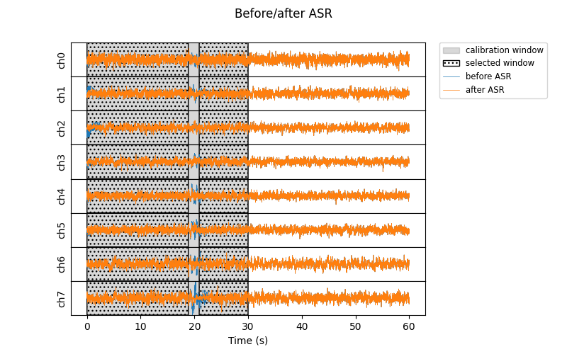

Note
Go to the end to download the full example code.
ASR example#
Denoise data using Artifact Subspace Reconstruction.
Uses meegkit.ASR().
import os
import matplotlib.pyplot as plt
import numpy as np
from meegkit.asr import ASR
from meegkit.utils.matrix import sliding_window
# THIS_FOLDER = os.path.dirname(os.path.abspath(__file__))
raw = np.load(os.path.join("..", "tests", "data", "eeg_raw.npy"))
sfreq = 250
Calibration and processing#
# Train on a clean portion of data
asr = ASR(method="euclid")
train_idx = np.arange(0 * sfreq, 30 * sfreq, dtype=int)
_, sample_mask = asr.fit(raw[:, train_idx])
# Apply filter using sliding (non-overlapping) windows
X = sliding_window(raw, window=int(sfreq), step=int(sfreq))
Y = np.zeros_like(X)
for i in range(X.shape[1]):
Y[:, i, :] = asr.transform(X[:, i, :])
raw = X.reshape(8, -1) # reshape to (n_chans, n_times)
clean = Y.reshape(8, -1)
Plot the results#
Data was trained on a 40s window from 5s to 45s onwards (gray filled area). The algorithm then removes portions of this data with high amplitude artifacts before running the calibration (hatched area = good).
times = np.arange(raw.shape[-1]) / sfreq
f, ax = plt.subplots(8, sharex=True, figsize=(8, 5))
for i in range(8):
ax[i].fill_between(train_idx / sfreq, 0, 1, color="grey", alpha=.3,
transform=ax[i].get_xaxis_transform(),
label="calibration window")
ax[i].fill_between(train_idx / sfreq, 0, 1, where=sample_mask.flat,
transform=ax[i].get_xaxis_transform(),
facecolor="none", hatch="...", edgecolor="k",
label="selected window")
ax[i].plot(times, raw[i], lw=.5, label="before ASR")
ax[i].plot(times, clean[i], label="after ASR", lw=.5)
ax[i].set_ylim([-50, 50])
ax[i].set_ylabel(f"ch{i}")
ax[i].set_yticks([])
ax[i].set_xlabel("Time (s)")
ax[0].legend(fontsize="small", bbox_to_anchor=(1.04, 1), borderaxespad=0)
plt.subplots_adjust(hspace=0, right=0.75)
plt.suptitle("Before/after ASR")
plt.show()

Total running time of the script: (0 minutes 0.839 seconds)